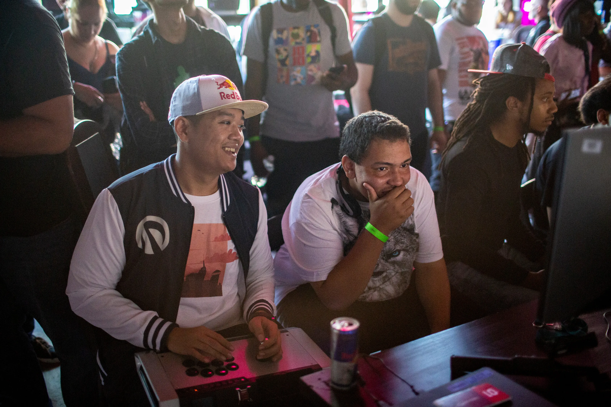
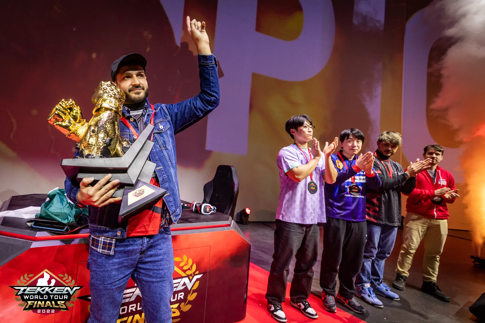
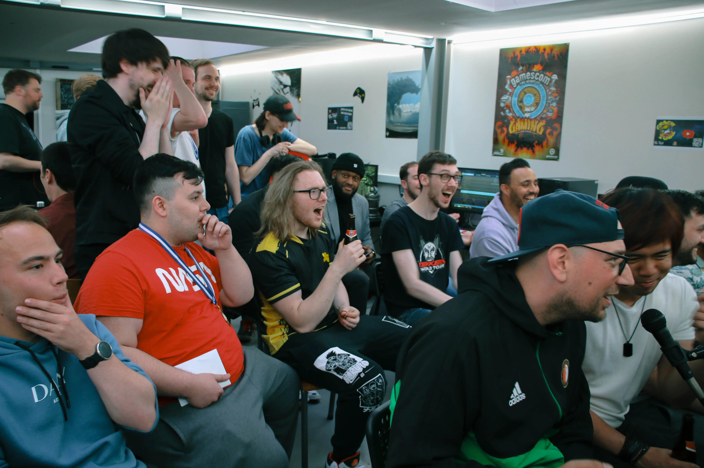
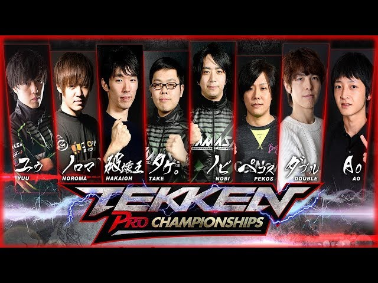
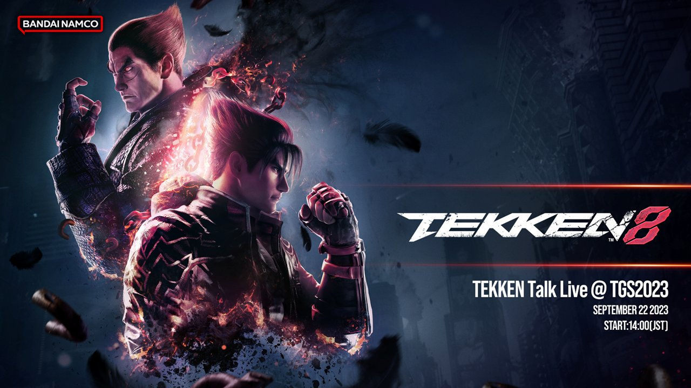

O cenário competitivo de Tekken é uma comunidade global de jogadores de alto nível, entusiastas e fãs dedicados que competem em torneios e eventos em todo o mundo. Aqui estão alguns aspectos-chave do cenário competitivo de Tekken: 
Tekken tem uma série de torneios de prestígio que atraem jogadores de alto nível de todo o mundo. Isso inclui o Tekken World Tour, que é uma série anual de torneios que culmina na Final Mundial. Outros torneios importantes incluem o EVO (Evolution Championship Series) e vários eventos regionais de destaque. 
A comunidade de jogadores de Tekken é muito ativa, com fóruns online, grupos de redes sociais e streamers que compartilham estratégias, dicas e replays. Isso ajuda a criar um ambiente onde os jogadores podem aprender e melhorar suas habilidades. 
Muitos jogadores profissionais de Tekken ganharam reconhecimento internacional e competem em diversos torneios. Alguns nomes notáveis incluem Arslan Ash, Knee, JDCR, Anakin e muitos outros. Esses jogadores são frequentemente patrocinados por equipes de esports e viajam para competir em todo o mundo.
Tekken é conhecido por sua ampla variedade de personagens, cada um com seu próprio estilo de luta. Isso torna o jogo diversificado e interessante de assistir, já que os jogadores podem escolher entre uma série de estilos de luta.
A Bandai Namco, a desenvolvedora de Tekken, continua a lançar atualizações e correções de equilíbrio para garantir que o jogo seja justo e competitivo. Isso mantém o jogo fresco e emocionante para os jogadores.
Os torneios de Tekken são frequentemente transmitidos ao vivo em plataformas como Twitch, onde os fãs podem assistir e torcer por seus jogadores favoritos. Isso ajuda a aumentar a visibilidade e o interesse no cenário competitivo.
Além dos grandes torneios internacionais, também existem inúmeros eventos regionais e locais que atraem jogadores de diversas habilidades. Isso ajuda a criar uma base sólida de jogadores em todo o mundo.
Com o crescimento da popularidade dos esports, as premiações em dinheiro para torneios de Tekken também têm crescido. Os jogadores de elite podem ganhar prêmios substanciais em dinheiro.
Em resumo, o cenário competitivo de Tekken é vibrante e em constante crescimento. Com jogadores de alto nível, uma base de fãs apaixonada e uma série de torneios emocionantes, Tekken continua a desempenhar um papel importante na cena dos jogos de luta competitivos.